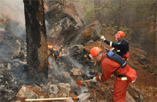

|
|
Kit Shop | Downloads | Links | Site Map | Contact Us |
|
Post WarThe Post-war FortiesWhen the 1st Battalion, The Queen's Own Cameron Highlanders of Canada demobilized in 1945, the Regiment did not cease to exist. Its Reserve Army component, the 2nd Battalion, remained and was officially redesignated the Queen's Own Cameron Highlanders of Canada on 1 April 1946. In the years immediately following the Second World War attracting and retaining recruits was a major problem. Attempts were made to bolster recruiting by airing a weekly radio program entitled The March of the Cameron men. In the end it was a small and dedicated band of keen and loyal militiamen who carried the Regiment through these difficult years. Rank and trade qualification schools were held in the summers of 1945 and 1947 at Camp Shilo, Manitoba and in 1946 and 1949 at Dundurn, Saskatchewan. The 1950'sWith the arrival of spring 1950, the Regiment was faced with a monumental task. The Winnipeg Flood was one of those "emergencies" which clearly bring to light the value of a trained militia. The Regiment mobilized in aid of the Civil Power on 8 May. The Battalion was organized into five work parties. Piped to the dykes, the Camerons worked in round the clock shifts for 17 days, until the danger of a universal flood diminished. During the 1950's the Regiment continued to train at Shilo and Dundurn; except in 1958 when militia personnel were attached to regular army battalions. The Camerons were attached to the 1st Battalion, Queen's Own Rifles of Canada, Currie Barracks, Calgary, Alberta. From 1954 to 1958 the Regiment operated in a new role. On 1 October the Camerons became a motor battalion-the infantry component of an armoured brigade. The battalion establishment was increased, and recruiting improved greatly. All Regimental quarters finally came under one roof, on 16 April 1955, when Battalion Headquarters, and Officers' and Sergeants' Messes moved from 202 Main Street into Minto Armoury. To generations of Camerons, 202 Main had been a kind of second home. Leaving "202" was a wrenching, nostalgic moment for old Camerons. The move from Main Street had barely been completed when, on 26 January 1956, fire gutted Minto Armoury. During the extensive renovations the Regiment trained at Carpiquet Barracks, returning to Minto in the winter of 1957. By October 1958 the Camerons had received the new F.N. self-loading rifle. It replaced the old but dependable Lee Enfield and has since been replaced (1990) by the C7 rifle-the Canadian version of the U.S. M16. In 1959 National Survival in the event of a nuclear disaster became the primary training role of the Militia. This involved traffic and population movement control, first aid, communications, decontamination, rescue of survivors, movement of supplies, and readiness to repel an invasion. The 1960'sThe Regiment marked its first half-century on 1 February 1960. The official celebrations took place took place from 30 September to 2 October and were very successful. Some seven hundred ex-Camerons came together to celebrate-and remember. The 1960s saw significant changes for the Army Reserve as a whole. Undermanned and issued with aging or obsolete equipment, the reserves were not seen as playing any useful role in a major overseas conflict, particularly with the belief that the conflict would go nuclear from the onset. Under this premise, the focus of the Militia moved away from war fighting and concentrated more on domestic operations, particularly territorial defence and survival ops after a nuclear conflict. In 1964 the Government adopted a new policy for the Militia. Support of the Regular Force became the primary role while the National Survival diminished in importance. Four members of the Regiment were attached to 4 Canadian Infantry Brigade Group in Germany in mid-August 1967. This marked the beginning of Militia flyovers, which continued through the late 1980's and provided valuable NATO operational experience with the Regular Force. The 1970'sDuring the early 1970's, the Camerons continued to experience the effects of post-war neglect and were again seriously under strength. Change, however, was on the horizon. In late 1973 the Minister of National Defense announced drastically increased rates of pay, acceptance of Militia personnel for service with the Canadian component of the UN Middle East Peacekeeping Force and increased emphasis on flyovers to Germany with the Canadian NATO Component. With the implementation of these policies began a long series of postings to the Canadian Contingents of UN Peacekeeping forces in Egypt, on the Golan Heights and in Cyprus. At this time also opportunities for Militia personnel to take parachute training with the Regular Force were made available and several Camerons have subsequently earned their “jump wings.” Several incidents of note took place during 1974: the Pipes and Drums were seen on television across North America as part of the City of Winnipeg Massed Pipes and Drums, leading the Rose Bowl Parade in Pasadena, California; several members of the unit spent two months of the summer in Germany with the Winnipeg District mechanized Platoon attached to the 3rd Canadian mechanized Commando and the Regiment received the new Canadian Forces green service dress uniform which replaced the old khaki battle and service dress uniforms. The Regimental Museum also opened. Extensive winter warfare training was carried out during the 1976-77 training season, culminating in field exercises at Pine Ridge prior to operating under sub-arctic conditions in the vicinity of Churchill, Manitoba. During 1978 the Regiment, now equipped with 106 mm heavy anti-tank weapons, busied itself qualifying men for the Armoured Defence Platoon. History repeated itself in 1979—with the spring thaw, the Red River jumped its banks, rising to the level of 1950. While Winnipeg was by then protected by a massive floodway, many farming communities to the south were less fortunate. Within an hour of the call for assistance the Camerons had assembled and dispatched a platoon to assist the 2 PPCLI, operating inside the ring dyke around Morris, Manitoba. For the next week the Camerons took part in sandbagging operations to keep the dyke intact. Once again, the Regiment had shown itself to be ready in time of need. The 1980'sIn the 1980s the role of the Militia was once more re-defined. The belief that any conflict would only turn nuclear after a series of conventional battles became prevalent. This scenario would give the belligerents adequate time to mobilize their reserves and commit them to battle. The eventual result of this thinking was the Total Force concept in which the Reserve and Regular components were to be more fully integrated. The Regiment marked its 79th birthday in 1989 with celebrations at Minto Armoury. The itinerary included military skills demonstrations, a performance by the Pipes & Drums, and an all-ranks Regimental Dinner. The 1990’sThe 1990s proved to be a very busy decade for the Regiment, both operationally and ceremonially. Falling out of Total Force was an increasing role for Reserve augmentation on overseas operations. Starting with OPERATION HARMONY Roto 1 in 1991 (Croatia) the Camerons began to provide a steady stream of augmentees to Regular Force units deploying on Operations. 1994 and 1995 were the years for big parades. First, the Regiment participated in the Freedom of the City parade marking the 50th anniversary of the D Day invasion. Next, the Regiment celebrated its 85th Birthday in 1995, with a parade at the Manitoba Legislature. Finally, the Camerons participated in the Freedom of the City parade marking the 50th Anniversary of VE Day. Fully focused on training for war once again, the late 1990s found the Regiment increasingly involved in Domestic Operations. In 1997, the Regiment was at ground zero for the “Flood of the Century”. This time the scope of the flood was so enormous, not even the floodway could protect Winnipeg as it had in 1970. The Camerons provided volunteers for the 38 Canadian Brigade Group (38 CBG) Composite Company and spent the spring sandbagging and building dykes throughout Southern Manitoba. When the possibility of the Y2K bug threatened to paralyze the nation at the end of 1999, the Regiment was tasked to provide Provincial Task Force Manitoba (PTFMB) Company 2 for OPERATION ABACUS. The company headquarters was stood up several days before the end of December and was prepared to initiate a mobilization on order. The 2000'sThe new millennium carried on in much the same fashion as the last decade of the previous. When the Reserves were tasked with raising a formed Rifle Company to augment 1 PPCLI on OPERATION PALLADIUM Roto 11 to Bosnia in 2002, the Camerons provided the Company second-in-command, Company Administration Officer, and eight other augmentees. 2002 marked the sixtieth anniversary of the ill-fated Dieppe Raid. The Regiment contributed a Sergeant, three soldiers and a piper to the CF Honour Guard traveling to France to commemorate the occasion. The Regiment was honoured to receive the Colonel-in-Chief, His Royal Highness the Duke of Edinburgh, who took time in between official functions to stop by Minto Armoury during the Royal Visit in October 2002. The Commanding Officer took the opportunity to present Prince Phillip with the newly minted Regimental Coin. In August 2003, disaster struck again. With forest fires raging out of control in many areas of BC, the Regiment was called to provide augmentees to fight fires (OPERATION PEREGRINE). Once again, Camerons responded to the call. October 2003 saw the Regiment issued with the new CADPAT (Canadian Disruptive Pattern) combat uniforms, turning in the venerable OD Green Combats after three decades of service. The new uniforms were followed by new load bearing equipment a year and a half later. March 2005 saw the 82 Pattern Webbing replaced with the new CADPAT Tactical Vests. Today, as an infantry regiment within the Army Reserve, the Queen’s Own Cameron Highlanders of Canada form part of the combat arms capability of 38 Canadian Brigade Group. Organized with a Battalion Headquarters, Headquarters Company, a Rifle Company (A Coy) and Pipes and Drums, the Camerons fulfill both military and ceremonial functions at home and abroad. As an infantry regiment, the unit’s main focus is provide trained infantry soldiers to meet the operational requirements of the Canadian Forces. Whether it is augmenting Regular Force units on overseas operations such as Bosnia or Afghanistan or fighting floods and forest fires at home, the Camerons provide a ready source of trained soldiers. Return to History |

| © 2006 - The Queen's Own Cameron Highlanders of Canada |